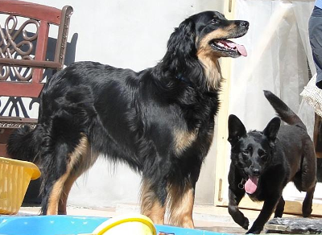

SAMOSIA Las Księżniczek

Samosia to córka Lotty Klejnot Fanusi – jedna z cudownych eSek, które urodziły się jeszcze w lesie, w Niewierzu. Samosia miała w naszej hodowli dwa mioty i była wspaniałą mamą.
Obecnie Samosia to już seniorka, która od czasu do czasu lubi pokazywać, że jej imię nie jest przypadkowe. A zaczęło się od tego, że sama wybrała sobie, iż chce stworzyć zespół z moją córką Martą. W związku z tym obecnie mieszkają razem, a wraz z nimi jeszcze inne czworonogi: kundelka Gandzia (na zdjęciu) i kocur Dekiel.
Samosia to też współ-kreatorka masażu GaSa (strona na facebook’u).